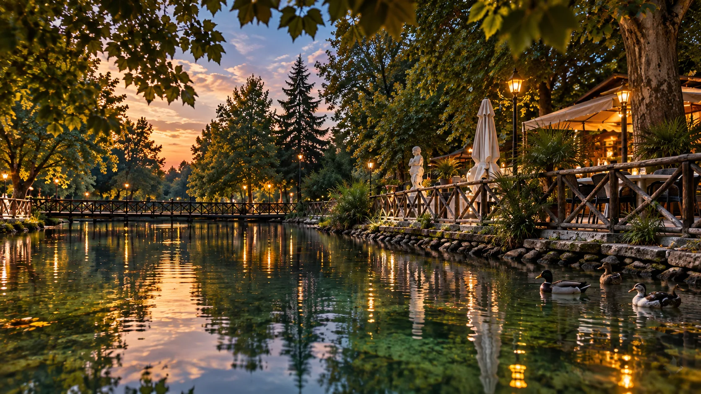
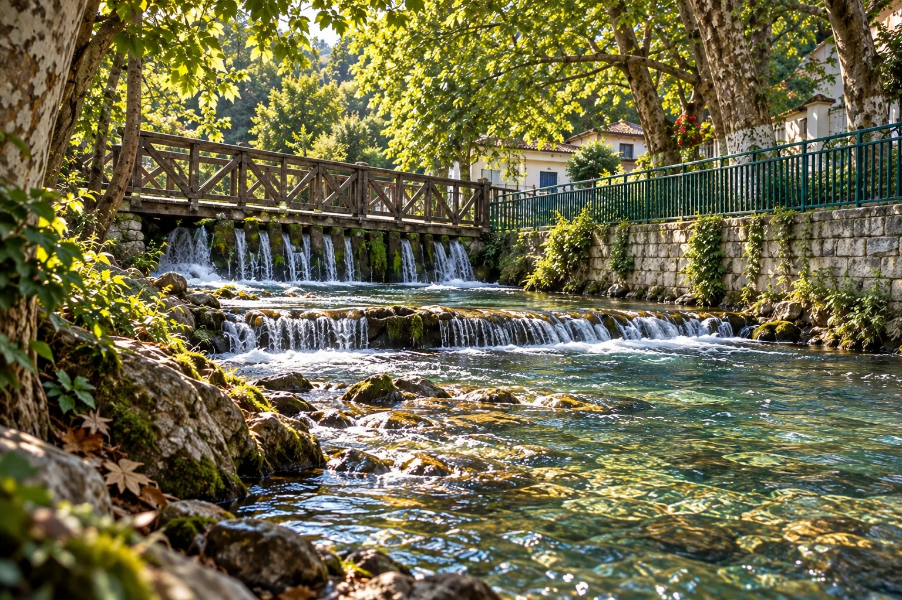
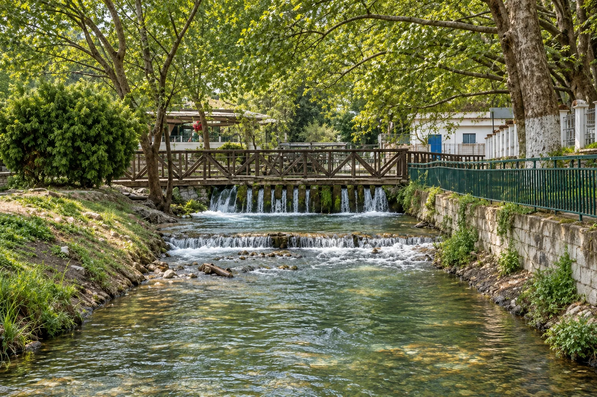
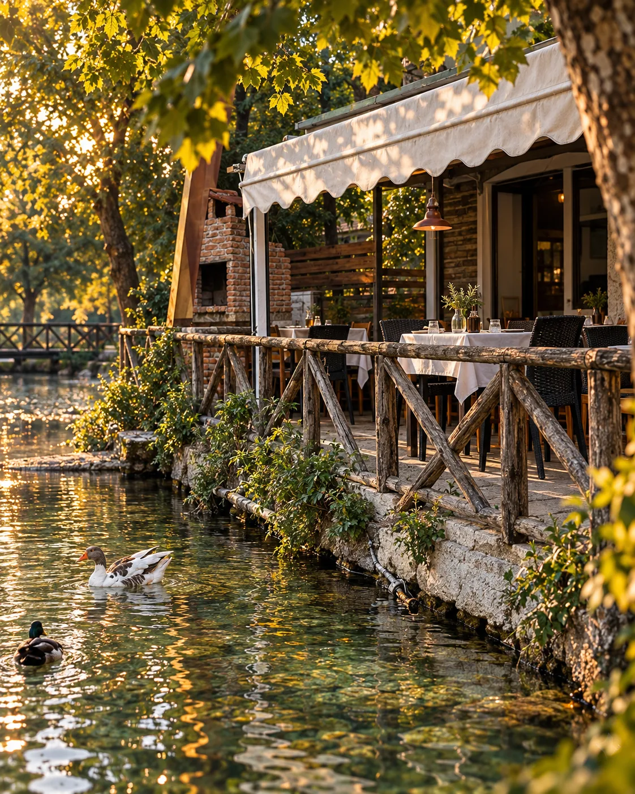
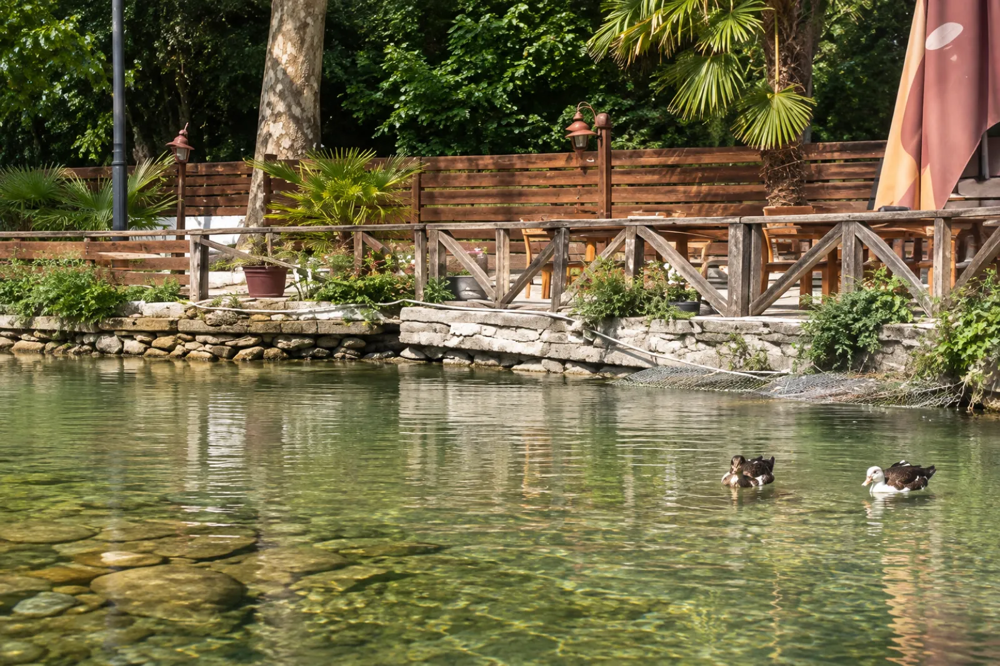
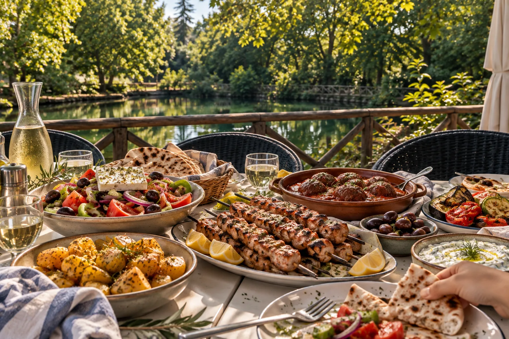
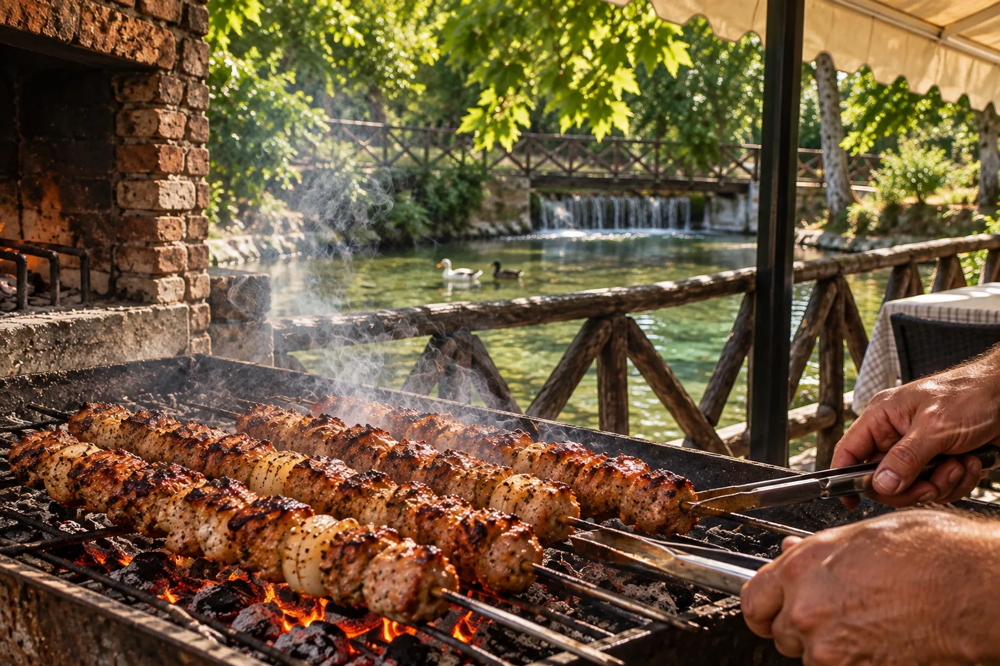
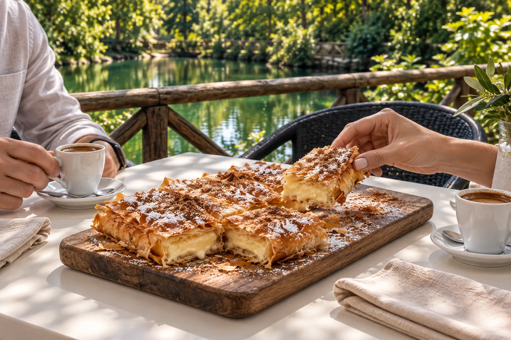

Το νερό σε μικρή κλίμακα.
Δεν είναι ένας θεαματικός, ψηλός καταρράκτης. Το τρεχούμενο νερό περνά από χαμηλές πτώσεις, ρυάκια και μικρές λίμνες κάτω από τα πλατάνια. Αυτή η εγγύτητα κάνει τον περίπατο και τη στάση δίπλα στο νερό ξεχωριστά.

ΣΤΟΝ ΑΪ ΓΙΑΝΝΗ ΣΕΡΡΩΝ
Λίγα λεπτά από τις Σέρρες, η ταβέρνα Η Λίμνη κοιτάζει το ήσυχο νερό. Ξύλινα κάγκελα, πάπιες και σκιά από τα δέντρα γίνονται μέρος του τραπεζιού.
Εδώ δεν χρειάζεται βιασύνη. Μόνο μια καλή θέση δίπλα στο νερό.

Το νερό μένει κοντά σου — όχι σαν θέα στο βάθος, αλλά σαν ο ήχος και η κίνηση αυτού του μέρους.
Ο ΑΪ ΓΙΑΝΝΗΣ, ΛΙΓΟ ΠΙΟ ΚΟΝΤΑ
Περίπου δύο χιλιόμετρα από το κέντρο των Σερρών, το νερό, οι λιμνούλες και τα παλιά πλατάνια φτιάχνουν έναν διαφορετικό ρυθμό.

Δεν είναι ένας θεαματικός, ψηλός καταρράκτης. Το τρεχούμενο νερό περνά από χαμηλές πτώσεις, ρυάκια και μικρές λίμνες κάτω από τα πλατάνια. Αυτή η εγγύτητα κάνει τον περίπατο και τη στάση δίπλα στο νερό ξεχωριστά.
Ο Άι Γιάννης είναι κοντά στην πόλη, αλλά προσφέρει σκιά και δροσιά. Οι επισκέπτες έρχονται για περίπατο, για τον ήχο του νερού, για καφέ ή για φαγητό στην περιοχή. Το καλοκαίρι είναι ανάσα από τη ζέστη· τον χειμώνα, μια ήρεμη στάση.
Η ευρύτερη περιοχή των Σερρών ενώνει πεδιάδα, ποτάμια, λίμνες και βουνά. Ο Άι Γιάννης είναι μια μικρή, εύκολα προσβάσιμη γεύση αυτού του τοπίου: νερό και πράσινο, σχεδόν δίπλα στην πόλη.
Η γέφυρα, το νερό και η ταβέρνα συνθέτουν τον δικό τους μικρό κόσμο. Διάλεξε μια εικόνα για να τον γνωρίσεις.
Τρεις όψεις του τόπου — δεν είναι διαδρομή ή χάρτης.
Ο ΧΑΡΑΚΤΗΡΑΣ ΤΟΥ ΤΟΠΟΥ
Η ταβέρνα έχει τον δικό της τρόπο να σε καλωσορίζει: απλά τραπέζια, το παλιό ξύλινο κάγκελο και το νερό ακριβώς δίπλα.


Δεν είναι σκηνικό. Είναι οι μικρές λεπτομέρειες που θυμάσαι όταν φύγεις.
ΑΠΟ ΤΟ ΝΕΡΟ ΣΤΗ ΦΩΤΙΑ
Η ΧΑΡΑ ΤΟΥ ΤΡΑΠΕΖΙΟΥ
Σουβλάκια από τη σχάρα, ντοματοσαλάτα με φέτα, σουτζουκάκια και μεζέδες στη μέση. Μια εικόνα για όσα μας φέρνουν μαζί.

ΓΕΥΣΕΙΣ ΓΙΑ ΤΗ ΜΕΣΗ
Από τη σχάρα ως τη σαλάτα: πιάτα που δίνουν στην παρέα έναν λόγο να μείνει λίγο ακόμη.


Οι εικόνες του φαγητού είναι δημιουργικές συνθέσεις, όχι φωτογραφίες της σημερινής κάρτας. Τα διαθέσιμα πιάτα επιβεβαιώνονται επί τόπου.
Λίμνη, πάπιες, νερό, βεράντα. Οι λεπτομέρειες που κάνουν αυτόν τον τόπο ξεχωριστό.
05 / ΕΛΑ ΝΑ ΜΑΣ ΒΡΕΙΣ
Η Λίμνη βρίσκεται στον Άι Γιάννη Σερρών. Έλα για το φαγητό, κάθισε για τη θέα και άφησε τη μέρα να πάει λίγο πιο αργά.
ΑΪ ΓΙΑΝΝΗΣ · ΣΕΡΡΕΣ · ΕΛΛΑΔΑ
ΔΕΙΤΕ ΤΗΝ ΠΕΡΙΟΧΗ ΣΤΟΝ ΧΑΡΤΗ